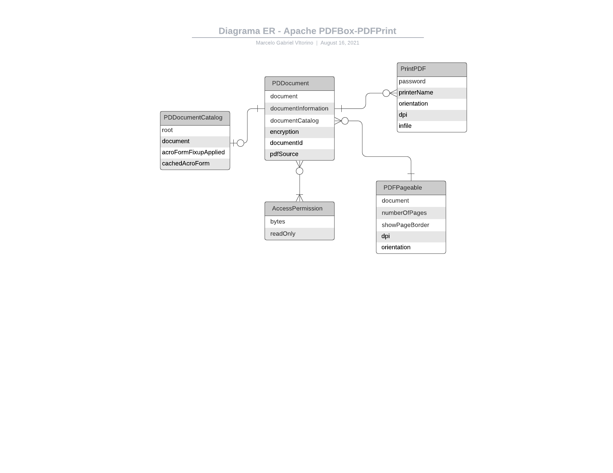

Arquitetura do pdf-box
Autores
Este documento foi produzido por Marcelo Gabriel dos Santos Queiroz Vitorino.
- Matrícula: 116211290
- Contato: marcelo.vitorino@ccc.ufcg.edu.br
- Projeto documentado: https://github.com/apache/pdfbox
Descrição Arquitetural - pdf-box
Essa descrição foi baseada principalmente no modelo C4.
Descrição geral sobre o pdf-box
O pdf-box é uma biblioteca java para trabalhar com documentos PDF. O Projeto permite a criação de novos PDF documentos e a manipulação de documentos existentes.
O módulo Apache PDFBox - PrintPDF
Objetivo Geral
Essa descrição se propõe em apresentar uma especificação da manipulação de arquivos PDF através da opção de imprimir um PDF com o PDFBox.
Contexto
Abaixo, é apresentado o diagrama de contexto do sistema. Nele, é possível analisar a interação entre o (Picocli, JavaPrint) e o programa de linha de comando para impressão em pdf.
Após a interação, o programa imprime o pdf no sistema de arquivos ou na impressora setada pelo usuário padrão.

Containers
Abaixo, observamos o diagrama de container para a aplicação Signal:

É possível identificar a utilização do terminal para permitir a inserção dos dados pelo usuário e realizar as requisições de sistema para a api.
Todas as informações de parâmetros de impressão são armazenadas em memória.
Componentes
Abaixo, é possível observar o diagrama de componentes do sistema:

No diagrama, tem-se alguns dos principais componentes do sistema:
- AccessPermission: Responsável por descriptografar os arquivos pdf e permitir privilégios de acesso;
- PrintJob: Responsável por gerenciar as ações de impressão de arquivos;
- PDFPageable: Responsável por setar as propriedades de impressão, tais como nome de impressora e rotação da página;
Visão de Informação
Aqui é possível observar as interações que a in-memory representação do PDF document faz. Apresentando que este pode ter uma impressão associada, tem exatamente uma PDFPageable configurada e pelo menos uma permissão de acesso.
